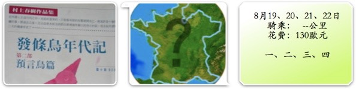

這年頭還相信有小叮噹的人，真是好人。
無奈小叮噹在抽屜裡，抽屜被鎖上了，鑰匙不在我這.....
腳踏車有問題就去找腳踏車店吧∼
依舊沒有合用的貨架，賣的是TOPEAK快拆式貨架（無側支架）。
幸好舊的貨架斷掉時，有把屍體留著當備用，沒有狠心丟棄。
跟店員一起研究怎麼把就貨架上的側支架移植到新的貨架上，居然也可行？
再加上塑帶加強牢固性，解決了貨架的問題，但這個貨架負重只有7公斤。
行李估計大約是12~5公斤左右，若不能適當的減重，再斷掉也是遲早的事情。
店員說通常實際負重可以到達標示的兩倍左右，只是要小心不要劇烈震動，45歐元。
裝貨架時，店員看到FCR1的煞車皮，露出不可置信的表情『喔∼！怎麼會磨損到這種程度？』
是呀，前後輪的煞車皮都完全磨光了，這一路騎來的損耗挺大的。
難怪覺得下山時，車子都煞不太住，還以為是坡度太陡的緣故，原來已經沒有煞車皮可以用了。
前後輪一起換，共四片，20歐元。
後輪的變速系統有點糟，會自動往上或是往下跳一格齒輪，反覆不斷，騎乘時很不舒服。
經研究，原來鍊條有些歪曲變形（之前掉鏈卡住車架，沒發現用力踩，大概這樣而變形了）。
些微調整了變速系統和把鍊條矯正，店員說騎了四千公里了，該換鍊條跟齒輪組了。
哎....沒錢，先繼續撐著騎吧，再糟也不過就是這樣？
工本費，5歐元。
總計70歐元，腳踏車整修完畢。
遇到這種令人沮喪的事情，別忘記對自己好一點，烤肋排大餐。
貞德說『本人無所畏懼！』